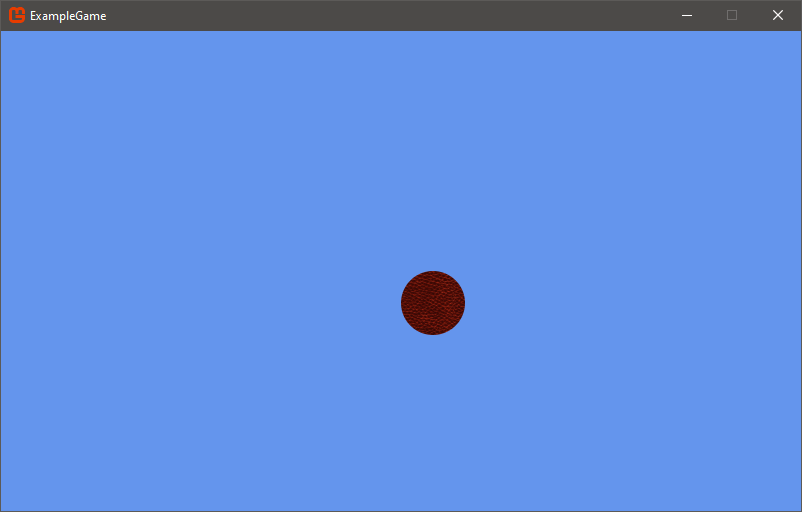
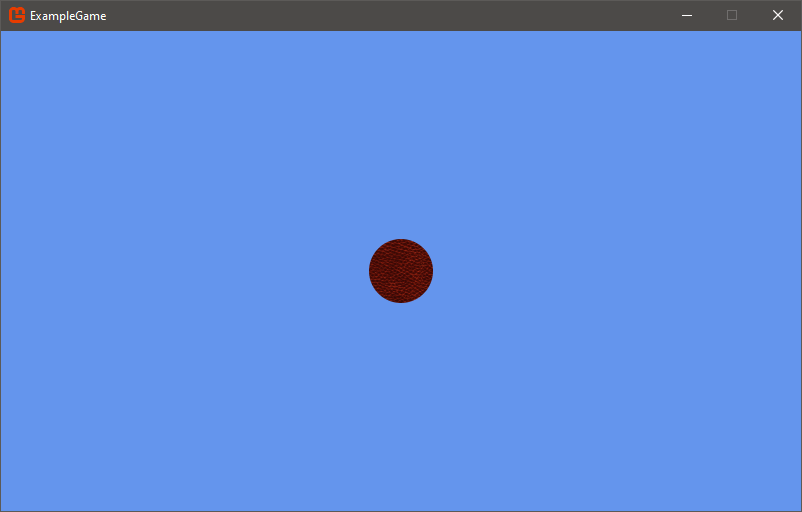

Adding Basic Code
This tutorial will go over adding basic logic to your game, continuing from where Adding Content left off.
Positioning the content
First, you need to add few new variables in the Game1.cs class file: one for position and one for speed.
public class Game1 : Game
{
Texture2D ballTexture;
Vector2 ballPosition;
float ballSpeed;
Next, you need to initialize them. Find the Initialize method and add the following lines.
// TODO: Add your initialization logic here
ballPosition = new Vector2(_graphics.PreferredBackBufferWidth / 2,
_graphics.PreferredBackBufferHeight / 2);
ballSpeed = 100f;
base.Initialize();
With this, you are setting the ball's starting position to the center of the screen based on the dimensions of the screen determined by the current BackBufferWidth and BackBufferHeight that was obtained from the Graphics Device (the current resolution the game is running at).
Lastly, change the Draw method to draw the ball at the correct position. Find the Draw method and update the spriteBatch.Draw call to:
_spriteBatch.Draw(ballTexture, ballPosition, Color.White);
Now run the game.

As you can see, the ball is not quite centered yet. That is because the default origin of a texture is its top-left corner, or (0, 0) relative to the texture, so the ball texture is drawn with its top-left corner exactly centered, rather than its actual center. You can specify a different origin when drawing, as shown in the following code snippet. The new origin takes into account the height and width of the image when drawing:
_spriteBatch.Draw(
ballTexture,
ballPosition,
null,
Color.White,
0f,
new Vector2(ballTexture.Width / 2, ballTexture.Height / 2),
Vector2.One,
SpriteEffects.None,
0f
);
This change adds a few extra parameters to the spriteBatch.Draw call, but do not worry about that for now. This new code sets the actual center (width / 2 and height / 2) of the image as its origin (drawing point).
Now the image will get drawn to the center of the screen.

Getting user input
Time to set up some movement. Find the Update method in the Game1.cs class file and add:
// TODO: Add your update logic here
var kstate = Keyboard.GetState();
if (kstate.IsKeyDown(Keys.Up))
{
ballPosition.Y -= ballSpeed * (float)gameTime.ElapsedGameTime.TotalSeconds;
}
if (kstate.IsKeyDown(Keys.Down))
{
ballPosition.Y += ballSpeed * (float)gameTime.ElapsedGameTime.TotalSeconds;
}
if (kstate.IsKeyDown(Keys.Left))
{
ballPosition.X -= ballSpeed * (float)gameTime.ElapsedGameTime.TotalSeconds;
}
if (kstate.IsKeyDown(Keys.Right))
{
ballPosition.X += ballSpeed * (float)gameTime.ElapsedGameTime.TotalSeconds;
}
base.Update(gameTime);
The following is a line-by-line analysis of the above code.
var kstate = Keyboard.GetState();
This code fetches the current keyboard state ('Keyboard.GetState()') and stores it into a variable called kstate.
if (kstate.IsKeyDown(Keys.Up))
This line checks to see if the Up Arrow key is pressed.
ballPosition.Y -= ballSpeed * (float)gameTime.ElapsedGameTime.TotalSeconds;
If the Up Arrow key is pressed, the ball moves using the value you assigned to ballSpeed. The reason why ballSpeed is multiplied by gameTime.ElapsedGameTime.TotalSeconds is because, when not using fixed time step, the time between Update calls varies. To account for this, the ballSpeed is multiplied by the amount of time that has passed since the last Update call. The result is that the ball appears to move at the same speed regardless of what framerate the game happens to be running at.
Try experimenting with what happens if you do not multiply the ballSpeed by gameTime.ElapsedGameTime.TotalSeconds, to see the difference it makes.
The rest of the lines of code do the same thing but for the Down, Left and Right Arrow keys, and down, left, and right movement, respectively.
If you run the game, you should be able to move the ball with the arrow keys.
You will probably notice that the ball is not confined to the window. You can fix that by setting bounds onto the ballPosition after it has already been moved to ensure it cannot go further than the width or height of the screen.
if (kstate.IsKeyDown(Keys.Right))
{
ballPosition.X += ballSpeed * (float)gameTime.ElapsedGameTime.TotalSeconds;
}
if (ballPosition.X > _graphics.PreferredBackBufferWidth - ballTexture.Width / 2)
{
ballPosition.X = _graphics.PreferredBackBufferWidth - ballTexture.Width / 2;
}
else if (ballPosition.X < ballTexture.Width / 2)
{
ballPosition.X = ballTexture.Width / 2;
}
if (ballPosition.Y > _graphics.PreferredBackBufferHeight - ballTexture.Height / 2)
{
ballPosition.Y = _graphics.PreferredBackBufferHeight - ballTexture.Height / 2;
}
else if (ballPosition.Y < ballTexture.Height / 2)
{
ballPosition.Y = ballTexture.Height / 2;
}
base.Update(gameTime);
Now run the game to test for yourself that the ball cannot go beyond the window bounds any more.
Happy Coding ^^
Further Reading
Check out the Tutorials section for many more helpful guides and tutorials on building games with MonoGame. We have an expansive library of helpful content, all provided by other MonoGame developers in the community.
Additionally, be sure to check out the official MonoGame Samples page for fully built sample projects built with MonoGame and targeting our most common platforms.